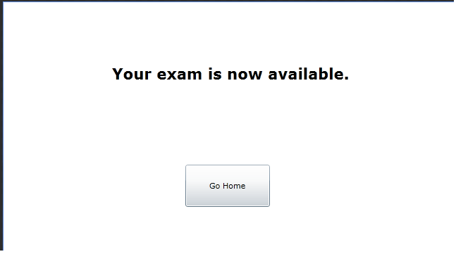

The take at home exam setting is one in which students take exams on their own personal computers at their homes. This method of test distribution
primarily is used in the distribution of practice or open-note exams.
Once the instructor clicks on the Distribute a Graded or Practice Exam button, the system displays a window in the form of
Figure 2.4.2.1a.
The instructor then fills in the various fields by either typing in his desired choice or by selecting a choice from the menus and checkboxes. To distribute a test in the take-at-home format, the instructor selects the Take At Home option in the Method dropdown menu. Once he is satisfied with his selections for the entire page, the instructor then clicks the Distribute button. Upon clicking that button, the system searches the exam database for the selected exam, and places on the student exam list, displayed as Figure 2.5.2 in Section 2.5. The system displays another window looking like Figure 2.4.2.2a to the instructor.

Figure 2.4.2.2a: Finished Distributing Take-at-Home Test.
{kind=link}
{kind=link}